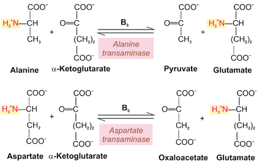

Transamination
Usually, the first step in the metabolism of amino acids not used for the synthesis of proteins or nitrogen-containing compounds is the removal of the amino group from the amico acid. Amino acids can undergo deamination and/or Transamination to remove amino groups. Deamination reactions involce only the remove of an amino group, with no direct transfer to another compound.
Transamination – the transfer of the amino group to a suitable keto acid acceptor.
The α-amino acid transfers its amino group to α-ketoglutarate (an intermediate of the TCA cycle), thus forming glutamate. The resulting carbon skeleton that is left, following removal of the α-amino group, then forms a variety of α-keto acids, which can be used in energy production. An α-keto acid is an organic acid containing a ketone functional group and a carboxylic acid group.
Gli enzimi che catalizzano le reazioni di transamminazione sono detti amminotrasferasi. These enzymes typically require vitamin B6 in its coenzyme form, piridossal-5'-fosfato (PLP).
These reactions are important for the synthesis of many of the body's dispensable amino acids. Transamination reactions can generate dispensable amino acids from indispensable amino acids or create on dispensable amico acid from another dispensable amino acid. The only exceptions are lysie, histidine and threonine, which do not participate in such reaction.